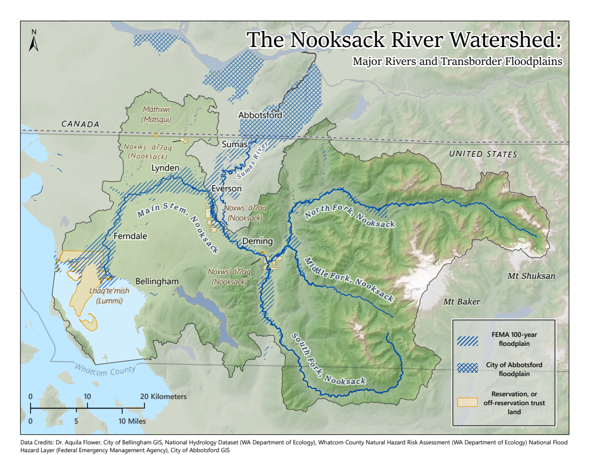

I created this map with fellow cartographer Kailey Schillinger-Brokaw, which was featured in an issue of WWU's Border Policy Research Institute policy briefs titled "Learning from the Past: Governing Transboundary Nooksack River Flooding."
View the Policy Brief